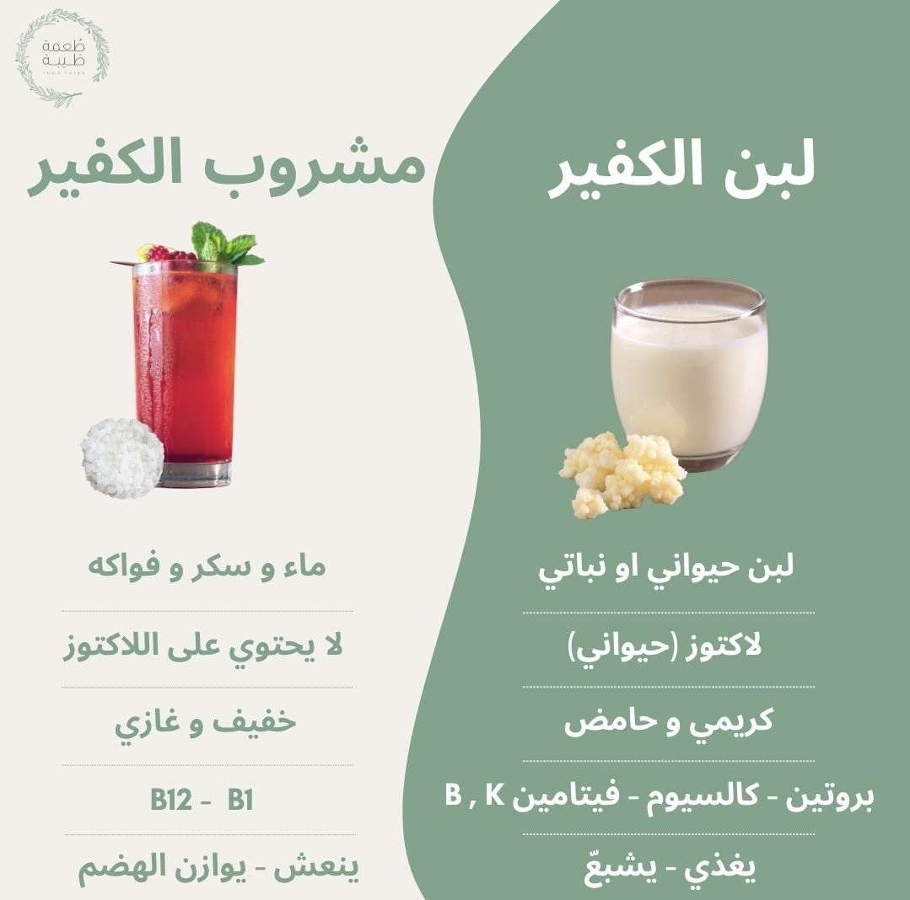
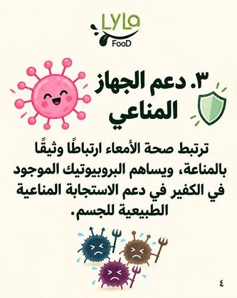

كلشي على حبوب الكفير… بمعلومات موثوقة وبالدارجة
مقالات عملية على كفير الحليب وكفير الماء: التحضير خطوة بخطوة، الفوائد العلمية، الأخطاء الشائعة، والوصفات. كتبناها بجوج لغات — عربية ودارجة — باش تفهم بلا تعقيد.
الأساسيات (4)

كفير الحليب: شنو هو بالضبط وكيفاش كيتحضّر فالدار
كفير الحليب هو مشروب مخمّر بالحبوب الحية. نشرح شنو هو، منين جا، وشنو كيميّزو على الزبادي العادي، وكيفاش كتحضّرو فالمغرب بسهولة.
اقرا المقالة ›
كفير الماء: الدليل الكامل من الحبوب حتى الكأس
كفير الماء مشروب غازي طبيعي بلا كحول. دليل كامل: المكونات، النسب، مدة التخمير، وكيفاش تخرج مشروب غازي منعش بالحامض والنعناع.
اقرا المقالة ›
الفرق بين الكفير والزبادي والرايب: أشنو تختار؟
مقارنة واضحة بين كفير الحليب والزبادي والرايب: السلالات، اللاكتوز، الطعم، والثمن. أشنو مناسب ليك حسب هدفك؟
اقرا المقالة ›
الفرق بين كفير الحليب وكفير الماء: أشنو يناسبك؟
جوج أنواع من الكفير بحبوب مختلفة. مقارنة على الطعم، الفوائد، اللاكتوز، وسهولة التحضير باش تعرف أشنو تشري.
اقرا المقالة ›التحضير والعناية (8)

طريقة تحضير كفير الحليب خطوة بخطوة (بالنسب الدقيقة)
وصفة كفير الحليب: شحال من حليب، شحال من حبوب، شحال من ساعة، وكيفاش تعرف أنه واجد. مع الأخطاء اللي كتخرب التحضير.
اقرا المقالة ›
طريقة تحضير كفير الماء بالسكر والفواكه
وصفة كفير الماء بالمقادير: شحال سكر، شحال حبوب، وكيفاش تخرج مشروب غازي منعش بلا ألوان ولا مواد حافظة.
اقرا المقالة ›
كيفاش تعرف أن حبوب الكفير حية؟ علامات الحبوب الميتة
علامات الحبوب الحية: كتكبر، كتطفو، وكتخمّر بسرعة. وعلامات الحبوب الميتة أو الضعيفة باش ماتضيعش فلوسك.
اقرا المقالة ›
تخزين حبوب الكفير: الفريج، المجمد، ولا الخزانة؟
شحال كتدوم حبوب الكفير فكل بلاصة، كيفاش تخزنهم ملي تسافر، وكيفاش تنعشهم من بعد الراحة.
اقرا المقالة ›كفير بالحليب النباتي: اللوز، الشوفان، وجوز الهند
كيفاش تحضّر الكفير بالحليب النباتي: أشنو كيخدم مزيان، أشنو كيضعف الحبوب، وكيفاش تحافظ على نشاطهم بدون حليب حيواني.
اقرا المقالة ›كيفاش تزيد كمية حبوب الكفير (التكاثر)
علاش الحبوب كتتكاثر، شحال كتزيد فالشهر، وكيفاش تتعامل مع الزيادة: تعطي، تجفف، ولا تخزن.
اقرا المقالة ›غسل حبوب الكفير: واش ضروري وكل شحال؟
كيفاش تغسل الحبوب بلا ما تخسرها، علاش الماء بالكلور ضار، وشنو الفرق بين الغسل الخفيف والتنظيف العميق.
اقرا المقالة ›المعادن ممنوعة فالكفير: علاش وكيفاش تختار الأدوات
علاش خاصك تتجنب المعدن فتحضير الكفير، أشنو الأدوات المسموحة، وكيفاش تغسلها باش ما تخسرش الحبوب.
اقرا المقالة ›الفوائد والصحة (7)

فوائد الكفير: شنو مثبت علمياً وشنو غير كلام؟
10 فوائد ديال الكفير مع شرح صادق: الهضم، المناعة، سكر الدم، العظام. وشنو مازال ما تأكدش علمياً باش ماتصدقش كلشي كيتقال فالانترنت.
اقرا المقالة ›
الكفير والقولون العصبي: شنو كتقول الدراسات؟
واش الكفير كيعاون فالقولون العصبي؟ شرح صادق للدراسات، وكيفاش تبدا بلا ما تزيد الانتفاخ، وشنو ماتتوقعش.
اقرا المقالة ›
الكفير والسكري: واش مناسب لمرضى السكر؟
واش الكفير كيرفع السكر ولا كينقصو؟ ما كتقول الدراسات، وكيفاش يتعامل معه مريض السكري بأمان.
اقرا المقالة ›
الكفير والمناعة: كيفاش كيدعم الجسم
علاش الأمعاء هي مركز المناعة، وكيفاش البروبيوتيك فالكفير كيدعم الاستجابة المناعية الطبيعية بلا مبالغة.
اقرا المقالة ›الكفير والوزن: شنو كيعاون بصح وشنو كلام
واش الكفير كينقص الوزن؟ الحقيقة على الشبع، السكر فالمشروب، وكيفاش تدخّلو فحمية بلا ما تزيد الكالوري.
اقرا المقالة ›الكفير والبشرة: شنو صحيح وشنو مبالغة
علاقة الأمعاء بالبشرة، واش الكفير كيعاون فحب الشباب، وكيفاش تستعملو كقناع — بلا وعود كذابة.
اقرا المقالة ›
الكفير والرياضة: مشروب استشفاء طبيعي
علاش الكفير مناسب بعد التمرين: السوائل، البروتين، والمعادن. وكيفاش تدخّلو فبريس-وركوت.
اقرا المقالة ›احتياطات وأسئلة (3)
أضرار الكفير: 7 احتياطات قبل ما تبدا
واش الكفير فيه أضرار؟ الاحتياطات الحقيقية: البداية التدريجية، الحوامل، المناعة الضعيفة، والتفاعل مع الأدوية.
اقرا المقالة ›الكفير والحمل والرضاعة: واش آمن؟
دليل حذر ومبني على الاحتياط: واش الحامل تقدر تشرب الكفير، أشنو الحليب المناسب، وشنو الأعراض اللي خاصها توقف.
اقرا المقالة ›الكفير للأطفال: من أي عمر وكيفاش تبدا
واش الأطفال يقدرو يشربو الكفير؟ العمر المناسب، الكميات، كفير الماء للأطفال، وعلامات الحساسية.
اقرا المقالة ›